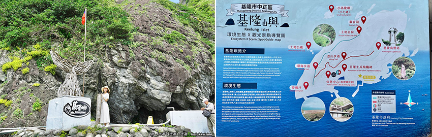
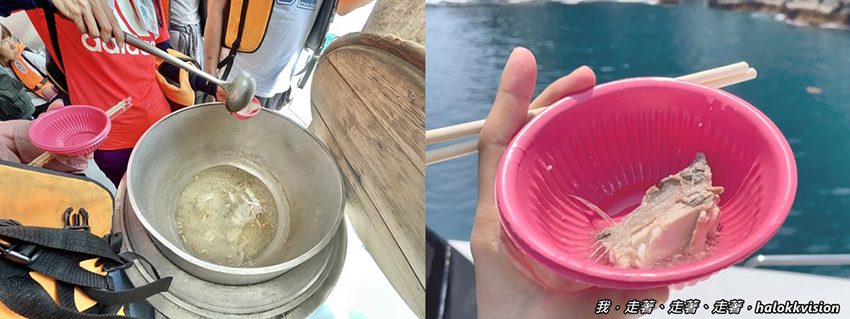

身為住在基隆的我，但我是第一次來 基隆嶼登島 耶！！覺得滿美的💙💙💙陪你看海的人，比海更溫柔~第一次與基隆嶼這麼的靠近~ 基隆嶼登島 是每年期間限定的行程，想去但有時候還不一定給上去呢！ 有登島人數限制管控。
(111年度) 2022年基隆嶼登島開放時間是4/1~10/31 **每年基隆嶼開放時間/疫情封島最新資訊點這裡👉 基隆嶼登島情報旅遊網FB / 基隆嶼旅遊|聯合船務中心。跟大家分享我之前去的基隆半日遊，基隆嶼登島玉龍捌號 金船長 : 基隆嶼登島行程(二合一/三合一/四合一任選)，來去海上龍珠探險！！ 船上還有鮮魚湯可以喝。
基隆新旅遊景點、基隆嶼登島， 我覺得也算還滿適合親子可以一起來的地方，至於老年人的話，能走樓梯、有在運動的人，就可以來唷！如果行動不便或是體力沒那麼佳的話，那我建議就不要選有「登燈塔」路線，就可以選「環海」路線。至於可以帶狗狗貓咪寵物一起搭船登島嗎？寵物友善，我搭的玉龍捌號金船長，是可以的唷！
我自己是會推薦如果你都來基隆嶼了，就一定要走上去「登燈塔」路線，因為你可能就只會來這一次了啊哈哈，雖然樓梯有點小多，但算是不難走且滿美的，官方寫原路來回需約1個多小時，我自己是單程走30分鐘~來回1個小時內完成唷！在島上的行程時間安排，算是滿充裕。
基隆景點｜基隆嶼 介紹
基隆嶼又稱「基隆杙」，為日治時期基隆八景之一，稱為「杙峰聳翠」，距離基隆只有5公里(航程約20分鐘)，與棉花嶼、彭佳嶼、花瓶嶼，並為基隆外海四個火山島嶼。長960公尺，寬400公尺，最高處約有海拔182公尺的小島，尖突的島嶼造型，是基隆外海最顯的地標。
基隆嶼是一海底火山噴發形成的小島，本身就是一塊岩漿遇海水凝固而成的「火成岩」，在海浪及海風不斷的沖刷之下形成了特別的斷崖海岸景觀，島嶼的四周皆為峭壁，幾無平地，並有許多的海蝕洞穴與岩礁，也因此有火山地質公園的美稱。因陸上觀賞位置不同而改變，有人說基隆嶼 像是一條鯨魚，也有人說她像一頭犀牛，更因氣候變化而展現其多重的美感；天晴晴朗時可見火山島之氣勢，晨昏時其隱約外形更顯神秘感飄渺 >> 以上資訊來源： 基隆旅遊網 基隆嶼 資訊介紹。
|  |
基隆景點｜基隆嶼登島 玉龍捌號 套裝行程價目表/班次查詢
前往基隆嶼登島的交通，就是要搭船過去唷！大致上每一家的船班行程都大同小異，登島基隆嶼 價格也都是公定價，但是有提供的服務設施就會有所不同。在網路上看到玉龍捌號金船長評價好像不錯呢！於是我也就沒有特別再多看幾家了，因為船上還有提供鮮魚湯，船艙內有恆溫空調(就冷氣啊)~還有頂級卡拉OK音響設備可以來高歌一曲(？) (去程回程都會免費提供礦泉水)
👉價目表/班次查詢：玉龍捌號 金船長船班行事曆 (*僅供參考，建議直接專線詢問可訂位日期)
👉每年基隆嶼開放時間/疫情封島最新資訊：基隆嶼登島情報旅遊網FB / 基隆嶼旅遊|聯合船務中心。建議假日需提前兩個月預訂，平日幾乎都有位。
🔽 金船長玉龍捌號 x 基隆嶼 海上生態之旅套裝行程：
• 登島二合一：環海步道+遶島= 2小時
• 登島三合一：環海步道+燈塔+遶島= 3.5小時 🌟(本文分享)
• 登島四合一：環海步道+燈塔+遶島+象鼻岩= 4小時
• 藍色公路生態之旅 海上遊程 : 遶島+潮境+象鼻岩+酋長岩+和平島=1.5小時
基隆嶼登島｜玉龍捌號金船長 停車場/集合地點
Google直接導航玉龍捌號(基隆市中正區北寧路211號)，就在基隆碧砂漁港(八斗子漁港)內，就會出現地標囉！ 關於停車場的部分，有分B計時及C計次兩大區停車場，車位算是滿多的。
很多人都會問到，搭船去基隆嶼會暈船嗎? 我~~~沒有暈耶！！ (像我搭船去綠島澎湖，是也不太會暈船)，我看我團的成員，也都沒有暈船吐耶，我們那天去的天氣風浪平穩，如果怕暈船的人，可以在出發前半小時先吃個暈船藥！
去程及回程，玉龍捌號都會提供礦泉水唷！本來還想說糟糕，忘記帶水了，如果你有要登燈塔的話，因為要走路爬個小山，記得適時補充水分！！ ⚠ 基隆嶼 島上是沒有賣水、飲料及任何吃的用的！ 但是是有廁所~
基隆嶼登島｜玉龍捌號 登島三合一行程
🚤 玉龍捌號 金船長 x 基隆嶼登島+攻頂登燈塔+繞島，三合一路線(共3.5小時)：
• 出海前往至基隆嶼航程，約20分
• 濱海步道 (除了可見到矗立海上的小基隆嶼，沿途觀賞奇岩怪石與豐富的植物景觀)
• 740公尺長的燈塔步道 (登上1137 級的階梯，攻頂基隆嶼制高點燈塔)，約1~1.5小時
• 島上停留時間約2.5小時🌟
• 上船從海上繞島，基隆嶼巡禮
• 返程，返回碧砂漁港，約20分
基隆嶼登島｜燈塔路線
建議可以先走燈塔路線，下來再去濱海路線，因為先苦後甘啊哈哈哈，燈塔路線比較累，濱海路線不累 (其實本來行程安排表訂是濱海先，燈塔後，但因為當天的人潮，濱海路上人多，所以導遊就說咱們先去燈塔吧！)
網站上寫著說來回約1個多小時，但我自己平常有運動爬山的習慣，所以我來回1小時就完成 (單程30分鐘，需原路返回)😎 建議大家可以挑平日來~~比較不會人擠人，拍照空景才不用等很久。在起登前，來一張綿延不絕的好拍視角~ 你那麼溫柔，走兩步，風都是甜的，但我走了至少有1137多步耶😂 穿著有點溫柔的裙裝，其實裙襬長的有點卡，但拍照起來有點氣質美，就很可以。
基隆嶼燈塔步道，740公尺長，有1137級的階梯，島上最高海拔182公尺，大部分路段主要為木棧道後部分路段為不平的石頭階，建議來這裡還是穿舒適好走的運動休閒鞋，涼鞋拖鞋不建議。
從起登處走了約20分鐘，來到了這個好拍視角，遠看有燈塔，近看還有 基隆嶼登頂成功海拔182公尺證明 打卡點哈哈！從這裡再走個10分鐘，就可以到燈塔至高點囉！ (單程總共約30分鐘攻頂)
下山的路跟上山的路一樣，只是視角不一樣了~覺得下山很美呢，像這樣綿延很像走到天際線的視角，真的很好看阿😍只不過不時會有人經過，想等空景還需要點運氣，速速拍完！遠方的天氣，其實有點小濛，早上的天氣比較陰，到了接近中午，陽光有比較出來露臉。想必如果是下午來爬的話，好熱喔，燈塔路線，沿路幾乎是沒什麼遮蔽物的。
聽說濱海路線那邊有隻斷尾巴的烏龜，靠岸了，如上圖，應該是這樣的是意圖吧?！請自行發揮想像的空間唷！！(其實路上還有看起來是兩隻青蛙的石頭？但是我沒有拍下來，可以自己找找)
基隆嶼登島｜登島(環海)路線
沿基隆嶼海岸步行，途中經土地公祠、觀音洞，還可發現兩處岩洞秘境？！ (一開始導遊走在我們後面，所以有聽到介紹講解，但走著走著前往燈塔，我們就與導遊分開了，導遊說他們先在涼亭休息，所以後面的路段，我們都沒遇到導遊，就都是自己走，所以濱海的這段路，沒有人帶我們說些歷史故事)
濱海路線不長，也是滿快就走完了，本來還想說三合一行程3.5小時會不會很趕？但其實我們燈塔和環海路段都走完後，約11:40，距離集合時間12:20，大約還有半個多小時呢！大概是我倆的腳程是比較快的人，所以我們就找地方歇息聊聊天~~等集合。
基隆嶼登島｜繞島路線
繞島會看到小基隆嶼和小象鼻岩，還有豬鼻洞岩，如果你是參加四合一行程的話，會再多去台灣36秘境之一的象鼻岩，我之前已經有在海上玩SUP看過大象了，所以就沒有報名四合一。回程一樣也約20分鐘，很快地就回到碧砂漁港啦！(回程有鮮魚湯可以喝，小心燙口！)
|  |
整趟的行程，撇除假日登島人多，覺得沒那麼喜歡人潮多之外，沿途的風景，我都覺得滿喜歡滿美滿好拍，蠻推薦大家可以來 基隆嶼登島 一次，差不多應該就是一次啦，因為島上也不大！